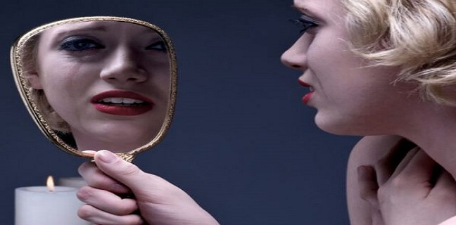

Es una afección mental por la cual las personas actúan de una manera muy emocional y dramática que atrae la atención hacia ellas.

Las causas del trastorno histriónico de la personalidad se desconocen. Los acontecimientos de la primera infancia y los genes pueden ser los responsables. Se diagnostica con mayor frecuencia en mujeres que en hombres. Los médicos creen que hay más hombres que pueden tener el trastorno de los que reciben el diagnóstico.
El trastorno histriónico de la personalidad generalmente comienza al final de los años de la adolescencia o poco después de cumplir los 20 años.